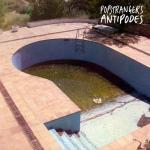
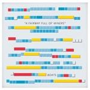

Music Reviews
-
Kavinsky Outrun
From the Drive-featured lead track to the gaudy typeface and vintage videogame-based concept, the debut of French House artist Kavinsky might be the most 80s album of all time. Not that there's anything wrong with that.
Unsurprisingly, Mark Davison played too many games as a kid... -

Popstrangers Antipodes
The New Zealand trio glorifies the ascendancy of grunge before it reached its inevitable nadir, yet rejects the insularity that musical subculture was widely for with a bevy for textural contrasts.
Juan Edgardo Rodríguez reviews... -
Ra Ra Riot Beta Love
In an effort to move in a new direction, Ra Ra Riot winds up going too far into synthpop territory. Their signature, string-laden sound is smothered and, in some cases, removed completely, in favor of electronic melodies and beats. In most cases, the songs display a band out of their element.
Joe Marvilli thinks this album should have stayed in beta form.... -
Iceage You're Nothing
Iceage exploded onto the punk scene fully formed and thirsting for blood with their debut, but their sophomore release, You're Nothing, is even more savage and nihilistic than ever. But does this mean the album demonstrates any growth?
Peter Quinton ices his black eye after being thrown into the hellion that is Iceage's latest... -

Boats A Fairway Full of Miners
Boats are a band that's a little "out there". Their new album is a lot out there. But is that good or bad?
John Grimley explores truly weird pop... -
Dan Friel Total Folklore
Dan Friel follows up last year's Valedictorian/Exoskeleton EP with another experimental creation, but this time a full-length, unadulterated frenzy of impulsive beats and exquisite madness.
Matt Bevington reviews... -

Jim James Regions of Light and Sound of God
My Morning Jacket frontman takes us on a musical excursion of folk, soul, rock, and soul-baring honesty.
Melissa Murphy reviews... -

Pere Ubu Lady from Shanghai
The venerable art-punk band returns with an extra dose of WTF.
Alan Shulman reviews... -

Pissed Jeans Honeys
The Pennsylvania sludge rockers continue to sought release from the outside forces that exist in their mundane lives.
Juan Edgardo Rodríguez blows off steam... -
The Virginmarys King Of Conflict
The Virginmarys' debut hits us hard with a radio-friendly onslaught of rock 'n' roll, ridden with straight-up in your face riffs, urgent vocals and gutsy choruses.
Carl Purvis reviews...